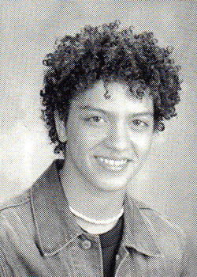
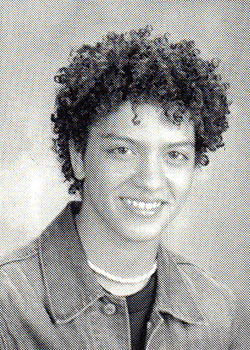
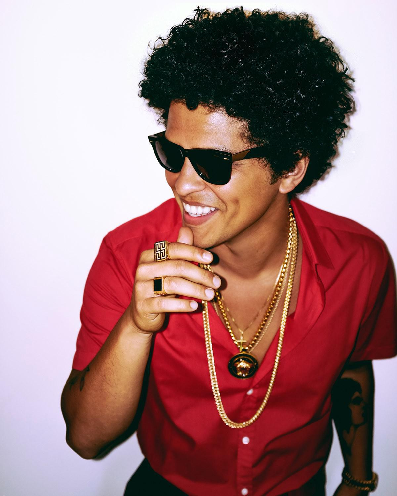
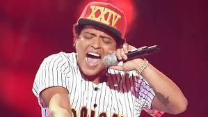
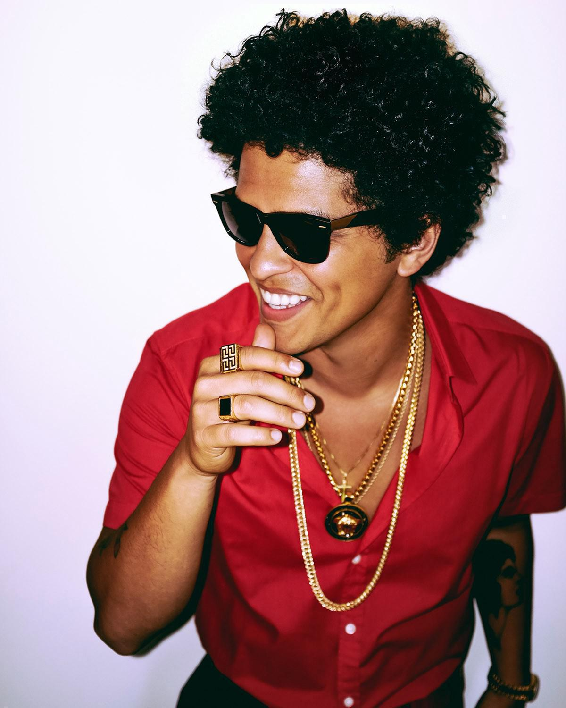
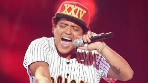
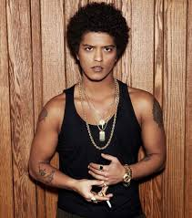
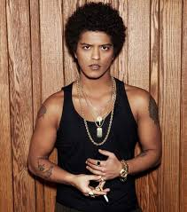
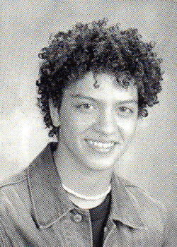

.jpg)
.jpg)
.jpg)
 



.jpg)
.jpg) 

Singer-songwriter Peter Gene Bayot Hernandez, also known as Bruno Mars was born on October 8, 1985, in Honolulu, Hawaii. He grew up in a house full of musical talent. His father Peter Hernandez was apart of a band called the "Love Notes" and he was a latin percussionist. His late mother Bernadette San Pedro Bayot was singer cum dancer. His parents have five children Eric, Tiara, Presley, Jaime, and Tahiti.
Ever since, he was a young child passionate about music. Around the age four years old he was encouraged to perform and impersonate Elvis Presley.Bruno Mars was once the youngest Elvis impersonator.Towards his teen years Mars also impersonated Michael Jackson.His performances gained him popularity in his hometown.
Mars attended Roosevelt High School. While, there he created a band with a group of friends called the School Boys. They performed with Bruno’s family act they played classic oldies hits.
After graduating from Roosevelt High School bruno decided to move to Los Angeles, California to start his music career. Once Mars, arrived to California he was signing to the record label Motown Even though Mars was immediately signed the label was confused by his image, his name and his music. Less than a year signed to Motown, he was dropped from this label. During, one of his interviews he opened up about being dropped from Motown. He states,"I might have cried. I might have shed some tears. You definitely have those nights where you feel a little insecure, but I didn't want to give up. My goal was, 'I'm not going to go back home. I'm not going back to Hawaii and face my friends and my family saying it didn't pan out. I've got to do something.' I think I grew. I grew as an artist. I grew as a writer. I wrote songs every day. I started producing. And you know, practise is what you need." This set back didn't stop Bruno from starting his career in 2009 Bruno was signed with Atlantic Records.

In the beginning, of his career he was introduced to songwriter Phillip Lawrence. They started working together writing songs. They wrote songs to present to his label that Bruno wanted to sing but he had to end up selling them to different artist to make money. In one of Mars interviews he stated, “We were so broke and struggling, we had to do what we had to do, so we ended up selling the song.” Instead ,of starting his career out as a singer he started it out as a songwriter. Towards the 2000s, he composed multiple songs for different artists.
He wrote hits for Flo Rida’s hit “Right Round,” Brandy’s “Long Distance,” Travie McCoy’s “Billionaire,” The Vamps’s “Can We Dance,” The Cab’s “Endlessly,” Cobra Starship’s “Living in The Sky with Diamonds,” Sean Kingston “Tomorrow,” Nick & Knight “Switch,” Adele “All I Ask,” K’naan “Bang Bang,” Jay-z & Kanye West “Lift Off,” Adam “Never Close Our Eyes,” and Coca-Cola's theme song for the 2010 FIFA World Cup.
For several years, this is how Bruno made it in the music business. In 2010 the hit “Nothin’ on You” started his singing career. The song was written for the rapper B.o.B., but the record label decided to put Bruno on the track to sing the chorus. The sing skyrocketed to the No.1 spot on the Billboard singles chart. This song brought him out of the behind the scenes of songs to his own singing artist.